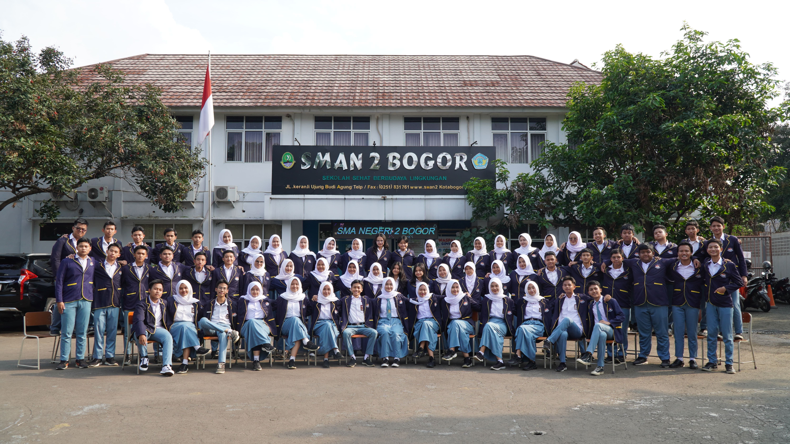
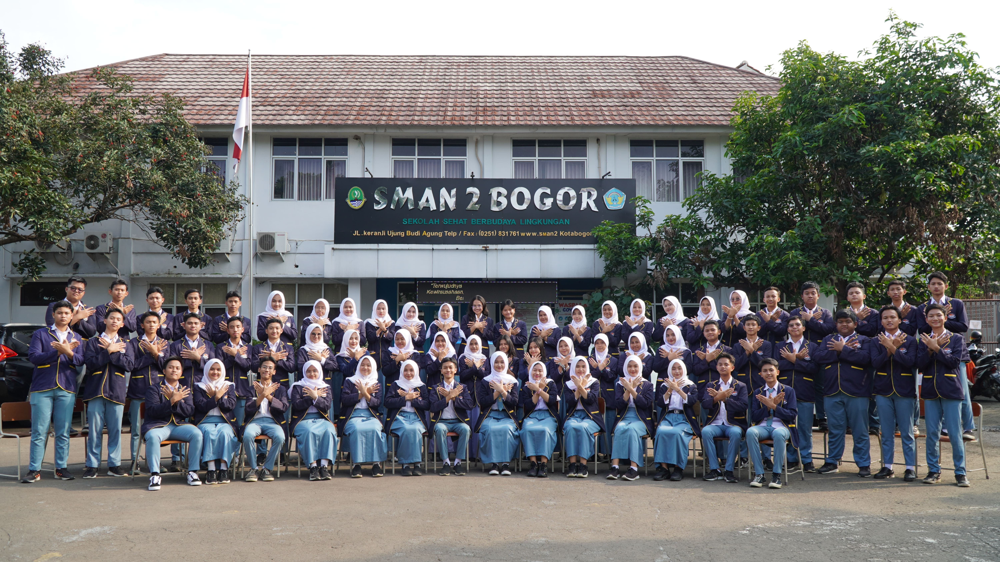
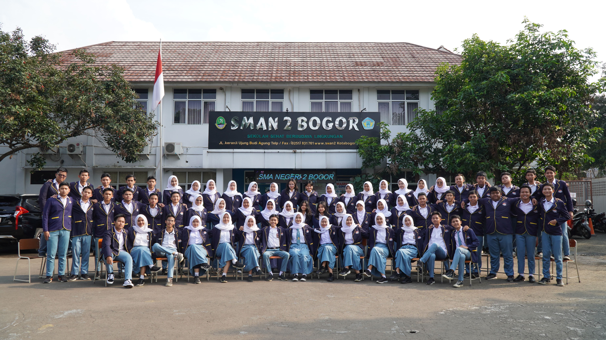
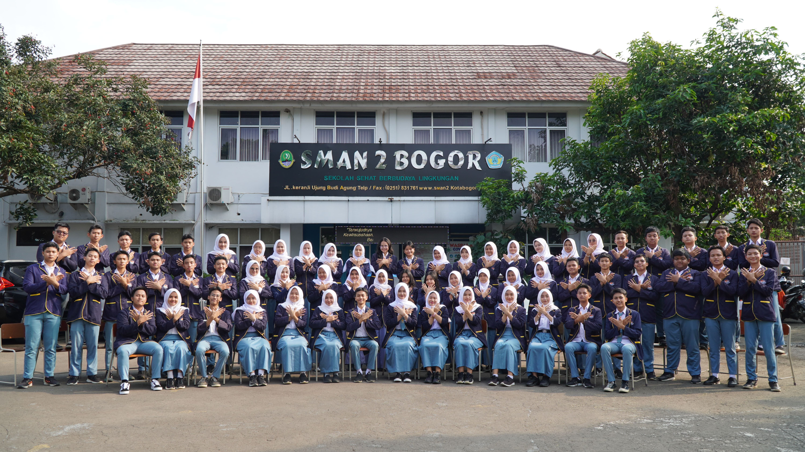
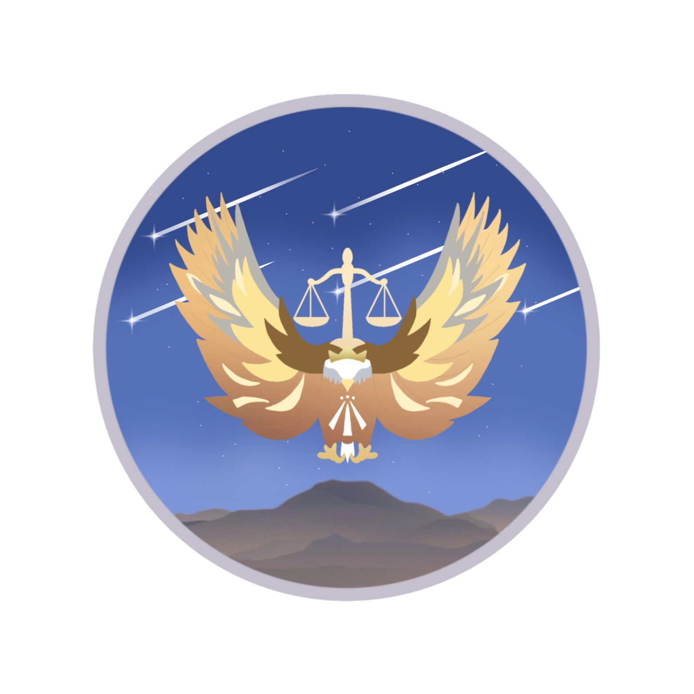

MAJELIS PERWAKILAN
KELAS
 



TENTANG
MPK atau Majelis Perwakilan Kelas adalah suatu organisasi di sekolah yang bertugas mengawasi kinerja OSIS dalam menjalankan tugas-tugasnya selama masa jabatannya berlangsung selain itu, MPK juga bertugas dalam penyampaian aspirasi warga sekolah.
MPK berperan sebagai penggerak siswa untuk berkontribusi aktif di sekolah dan merupakan wadah pembinaan kesiswaan yang bertujuan untuk mengembangkan minat, bakat, dan potensi siswa.
Organisasi ini berfungsi sebagai tempat berkomunikasi, menyampaikan pemikiran, serta mematangkan kemampuan berpikir dan pengambilan keputusan dalam rangka mendukung peran sekolah sebagai tempat belajar mengajar.
5 FUNGSI MPK
L A S K A R
1. Legislator
2. Aspirator
3. Supervisor
4. Korektor
5. Advisor
KOMISI
KOMISI A
Tentang pengawasan serta penilaian terhadap OSIS SMAN 2 Bogor
KOMISI B
Tentang penampung aspirasi dan sebagai jembatan hubung antara warga sekolah, pihak ekskul dan pihak sekollah
KOMISI C
Tentang informasi dan komunikasi antara OSIS/MPK, pihak sekolah, dan warga sekolah. Komisi ini berperan sebagai pusat kanal informasi utama MPK baik melalui media sosial ataupun secara langsung.
KOMISI D
Tentang Pemberdayaan sumber daya manusia, perevisian AD/ART, kaderisasi, pembentukan dan pengembangan karakter kedisiplinan, dan softskill seluruh pengurus MPK
ANGKATAN
2020/2021
Atlas Arkananta
2021/2022
Balwana Amongkarsa
2022/2023

Swarasco Estungkara
2023/2024
Bathari Ayaskara
Kotak Aspirasi
Tulis Aspirasimu disini!